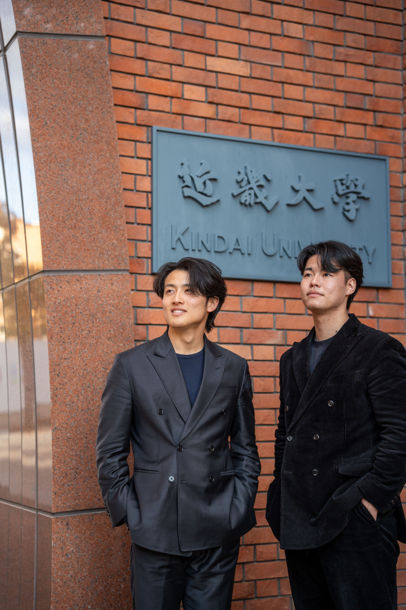

KINSEI NETWORK
採用課題
育成採用はこちら
実務経験
就活無双への第一歩はこちら
採用課題
育成採用はこちら
実務経験
就活無双への第一歩はこちら

「世の中」を、近畿大学から変えていく。
近畿大学を起点に、"なんとなく就活"を終わらせる。
学生が企業を選び、企業が本当に欲しい人材と出会う。
その接点をつくることで、日本の採用のあり方を変えていく。
学生に実務機会を、企業に育成された人材との出会いを。
人材の育成から採用までをつなぐ仕組みを構築します。
近大を、“実力で評価される大学”へ。
“なんとなく就活”を終わらせる。
“辞めない人材”に出会える。
“選択できる人材”が当たり前の社会へ。
“就活前から採用まで”を一気通貫で変える。
学生の意思決定を変え、企業の採用の質を変える。
“なんとなく就活”をなくす
“人となり”が見える状態をつくる
“辞めない採用”を実現する
| 項目 | 従来の就活 | 近世 |
|---|---|---|
| 意思決定 | なんとなく・雰囲気 | 言語化された意思 |
| 判断軸 | 知名度・条件 | 思考・価値観・納得度 |
| 行動 | とりあえずエントリー | 意図を持った選択 |
| 情報 | 表面的(HP・説明会) | 内面(思考・価値観) |
| マッチング | 偶然 | 必然 |
| 結果 | 早期離職が起きる | 納得して働き続ける |
月額1万円からの応援企業枠や、学生を直接派遣する導入プランをご用意。
近大生へのPR、そして次世代の採用スキームを共に創りませんか？

産業×デジタル領域での事業立ち上げ経験を背景に、教育と産業を接続する人材育成モデルの構築を構想。
学歴ではなく実力が評価される社会の実装を目指します。近大から日本を面白くしましょう！

オーダースーツ事業を起点に高単価営業を経験。企業リクルーティングイベント等を集客からスポンサー獲得まで一気通貫で実行。学歴による就活格差の問題に着目し、「Give Give Give」の精神で事業を行う。